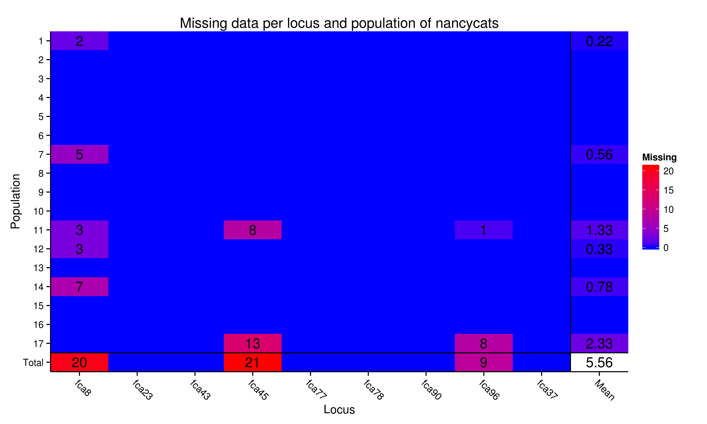
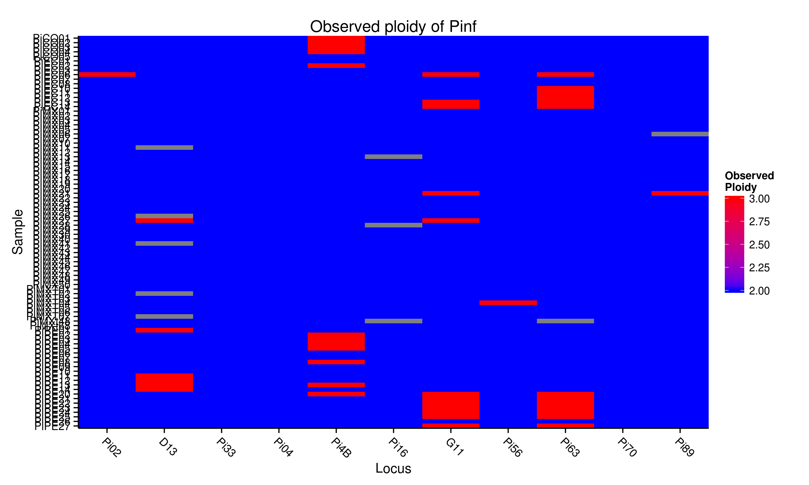
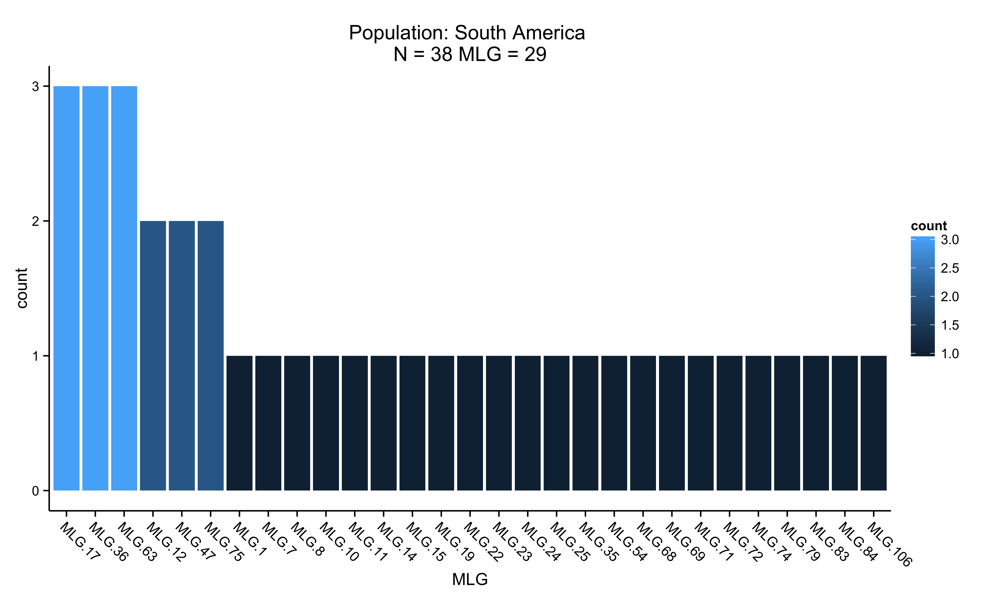
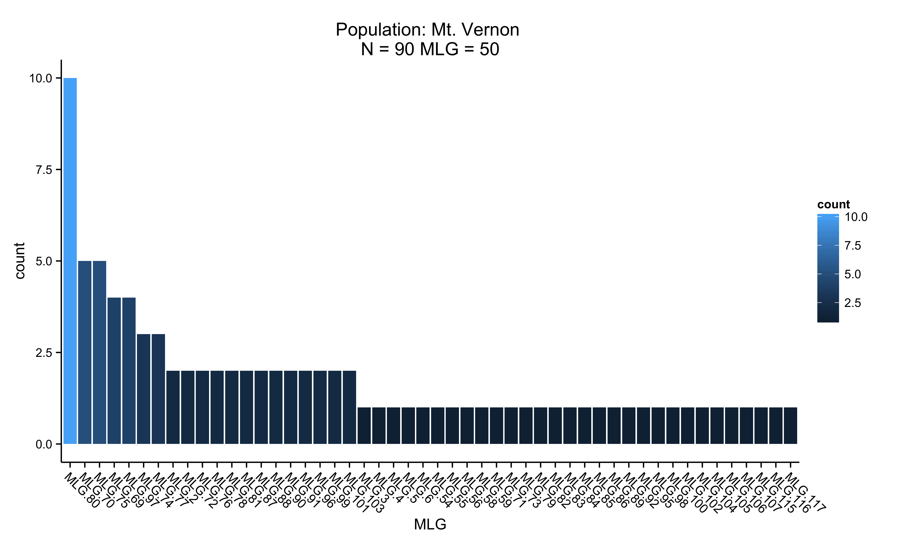

This chapter introduces basic use of and navigation in poppr as well as good practices when starting an analysis. We will start by loading data into R and poppr and glance at the genotypic diversity observed in populations and allelic frequencies observed in your loci by population. Both of these are good first steps to eliminate data entry errors, check for missing/rare data and make sure all loci conform to expectations given your analyses.
We will use AFLP data for a population of the diploid plant pathogen Aphanomyces euteiches to get started (Grünwald & Hoheisel, 2006). This data can also be downloaded from figshare by copying the link from the Download button. A total of 187 pathogen isolates were sampled hierarchically in two regions in Oregon (N = 97) and Washington (N = 90), respectively. Let’s first load the data:
library(poppr) # Load poppr package## Loading required package: adegenet
## Loading required package: ade4
## ==========================
## adegenet 1.4-1 is loaded
## ==========================
##
## - to start, type '?adegenet'
## - to browse adegenet website, type 'adegenetWeb()'
## - to post questions/comments: adegenet-forum@lists.r-forge.r-project.org
##
##
## This is poppr version 1.1.0.99data(Aeut) # Load A. euteiches data stored within poppr
# Optional, load the data from figshare:
Aeut.figshare <- read.genalex("http://files.figshare.com/1314228/rootrot.csv")Let’s make sure the data is loaded appropriately:
Aeut # The data set in poppr##
## #####################
## ### Genind object ###
## #####################
## - genotypes of individuals -
##
## S4 class: genind
## @call: read.genalex(genalex = "rootrot.csv")
##
## @tab: 187 x 56 matrix of genotypes
##
## @ind.names: vector of 187 individual names
## @loc.names: vector of 56 locus names
## @loc.nall: NULL
## @loc.fac: NULL
## @all.names: NULL
## @ploidy: 2
## @type: PA
##
## Optionnal contents:
## @pop: factor giving the population of each individual
## @pop.names: factor giving the population of each individual
##
## @other: a list containing: population_hierarchyAeut.figshare # the data set from the internet##
## This is a genclone object
## -------------------------
## Genotype information:
##
## 119 multilocus genotypes
## 187 diploid individuals
## 56 dominant loci
##
## Population information:
##
## 1 hierarchical level - Pop
## 18 populations defined - Athena_1 Athena_2 Athena_3 ... Mt. Vernon_6
## Mt. Vernon_7 Mt. Vernon_8As we can see, the data has the expected 56 loci and \(N\) = 187 individuals.
A good first step after loading data is to look for missing data, rare alleles and overall quality of your data:
data(nancycats)
locus_table(nancycats)##
## allele = Number of observed alleles
## 1-D = Simpson index
## Hexp = Nei's 1978 expected heterozygosity
## ------------------------------------------## summary
## locus allele 1-D Hexp Evenness
## fca8 16.00 0.87 0.92 0.76
## fca23 11.00 0.79 0.87 0.68
## fca43 10.00 0.80 0.88 0.79
## fca45 9.00 0.76 0.86 0.67
## fca77 12.00 0.87 0.95 0.86
## fca78 8.00 0.69 0.79 0.64
## fca90 12.00 0.82 0.89 0.77
## fca96 12.00 0.76 0.83 0.64
## fca37 18.00 0.61 0.64 0.42
## mean 12.00 0.77 0.85 0.69info_table(nancycats, plot = TRUE, percent = FALSE) # Search for missing data.
## Locus
## Population fca8 fca23 fca43 fca45 fca77 fca78 fca90 fca96 fca37 Mean
## 1 2.00 . . . . . . . . 0.22
## 2 . . . . . . . . . .
## 3 . . . . . . . . . .
## 4 . . . . . . . . . .
## 5 . . . . . . . . . .
## 6 . . . . . . . . . .
## 7 5.00 . . . . . . . . 0.56
## 8 . . . . . . . . . .
## 9 . . . . . . . . . .
## 10 . . . . . . . . . .
## 11 3.00 . . 8.00 . . . 1.00 . 1.33
## 12 3.00 . . . . . . . . 0.33
## 13 . . . . . . . . . .
## 14 7.00 . . . . . . . . 0.78
## 15 . . . . . . . . . .
## 16 . . . . . . . . . .
## 17 . . . 13.00 . . . 8.00 . 2.33
## Total 20.00 . . 21.00 . . . 9.00 . 5.56If your data consists of polyploid SSR markers, you would code the unobserved alleles as “0”. An example for this is the Phyophthora infestans data set from (Goss et al. 2014), which is a subset of a tetraploid data set. In this example, each row represents an isolate and each column represents a locus:
data(Pinf)
Pinf##
## This is a genclone object
## -------------------------
## Genotype information:
##
## 72 multilocus genotypes
## 86 tetraploid individuals
## 11 codominant loci
##
## Population information:
##
## 2 hierarchical levels - Continent Country
## 2 populations defined - South America North Americatail(genind2df(Pinf, sep = "/"))## pop Pi02 D13 Pi33
## PiPE22 South America 000/000/160/160 000/000/142/144 000/000/203/203
## PiPE23 South America 000/000/160/160 000/000/140/140 000/000/203/203
## PiPE24 South America 000/000/160/160 000/000/142/144 000/000/203/203
## PiPE25 South America 000/000/160/160 000/000/142/144 000/000/203/203
## PiPE26 South America 000/000/162/162 000/000/142/142 000/000/203/203
## PiPE27 South America 000/000/154/160 000/000/136/138 000/000/203/203
## Pi04 Pi4B Pi16 G11
## PiPE22 000/000/166/170 000/000/213/217 000/000/176/178 000/152/162/200
## PiPE23 000/000/166/170 000/000/213/217 000/000/176/178 000/152/160/200
## PiPE24 000/000/166/170 000/000/213/217 000/000/176/178 000/152/162/200
## PiPE25 000/000/166/170 000/000/213/217 000/000/176/178 000/152/162/200
## PiPE26 000/000/166/170 000/000/205/217 000/000/176/178 000/000/156/166
## PiPE27 000/000/166/170 000/000/213/217 000/000/176/178 000/152/170/200
## Pi56 Pi63 Pi70 Pi89
## PiPE22 000/000/176/176 000/148/151/157 000/000/189/192 000/000/179/179
## PiPE23 000/000/176/176 000/148/151/157 000/000/189/192 000/000/179/179
## PiPE24 000/000/176/176 000/148/151/157 000/000/189/192 000/000/179/179
## PiPE25 000/000/176/176 000/148/151/157 000/000/189/192 000/000/179/179
## PiPE26 000/000/176/176 000/000/157/157 000/000/192/195 000/000/179/181
## PiPE27 000/000/176/176 000/148/151/157 000/000/189/192 000/000/179/179To observe the different levels of ploidy in your data, use the function info_table with the argument type = "ploidy":
Pinf.ploidy <- info_table(Pinf, type = "ploidy", plot = TRUE)
tail(Pinf.ploidy)## Loci
## Samples Pi02 D13 Pi33 Pi04 Pi4B Pi16 G11 Pi56 Pi63 Pi70 Pi89
## PiPE22 2 2 2 2 2 2 3 2 3 2 2
## PiPE23 2 2 2 2 2 2 3 2 3 2 2
## PiPE24 2 2 2 2 2 2 3 2 3 2 2
## PiPE25 2 2 2 2 2 2 3 2 3 2 2
## PiPE26 2 2 2 2 2 2 2 2 2 2 2
## PiPE27 2 2 2 2 2 2 3 2 3 2 2You are now able to assess the quality of your data and examine allelic diversity in your populations. In the next section we will learn how to calculate genotypic diversity.
Let us get a first impression of the diversity found in this data using the summary function, poppr:
poppr(Aeut)## | Athena
## | Mt. Vernon
## | Total## Pop N MLG eMLG SE H G Hexp E.5 Ia rbarD File
## 1 Athena 97 70 66.0 1.25 4.06 42.2 0.986 0.721 2.91 0.0724 Aeut
## 2 Mt. Vernon 90 50 50.0 0.00 3.67 28.7 0.976 0.726 13.30 0.2816 Aeut
## 3 Total 187 119 68.5 2.99 4.56 69.0 0.991 0.720 14.37 0.2706 AeutWe can see statistics printed for each individual and the total population. The fields you see in the output include:
Pop - Population name.N - Number of individuals observed.MLG - Number of multilocus genotypes (MLG) observed.eMLG - The number of expected MLG at the smallest sample size ≥ 10 based on rarefaction (Hurlbert, 1971).SE - Standard error based on eMLG.H - Shannon-Wiener Index of MLG diversity (Shannon, 2001).G - Stoddart and Taylor’s Index of MLG diversity (Stoddart & Taylor, 1988).Hexp - Nei’s expected heterozygosity (denoted elsewhere as D) (Nei, 1978).E.5 - Evenness, E5 (Pielou, 1975; Ludwig & Reynolds, 1988; Grünwald et al. 2003).Ia - The index of association, \(I_A\) (Brown et al. 1980; Smith et al. 1993).rbarD - The standardized index of association, \(\bar{r}_d\) (Agapow & Burt, 2001).What does all this mean? Both populations have a similar number of individuals (\(N\) = 90 and 97) sampled. However, one population has 50 and the other 70 \(MLG\) while both populations together have combined 119 \(MLG\). Genotypic diversity (either \(H\) or \(G\)) is higher in population 1 than population 2, while evenness is similar. Let’s ignore \(I_A\) and \(\bar{r}_d\) for now, as these are measures of linkage disequilibrium that will be covered in Chapter 7.
Next, let’s calculate \(MLG\) for each population, e.g. “Athena” and “Mt. Vernon” populations:
A.tab <- mlg.table(Aeut)## | Athena
## | Mt. Vernon
The figures provide histograms to see how evenly \(MLGs\) are distributed within each population. Both populations have genotypes that occur a few times and only a few genotypes that occur more than 5 times (as expected from the high \(E_5\) discussed above). Feel free to explore the actual published data to see how this work was interpreted previously (Grünwald & Hoheisel, 2006).
This concludes our first introduction on how to count genotypes and determine genotypic diversity, evenness and richness in populations. In the next chapter we will learn how to subset and clone-correct populations.
P-M Agapow, A Burt, (2001) Indices of multilocus linkage disequilibrium. Molecular Ecology Notes 1 (1-2) 101-102 http://onlinelibrary.wiley.com/doi/10.1046/j.1471-8278.2000.00014.x/abstract
AHD Brown, MW Feldman, E Nevo, (1980) Multilocus structure of natural populations of Hordeum spontaneum. Genetics 96 (2) 523-536 http://www.genetics.org/content/96/2/523
EM Goss, JF Tabima, DEL Cooke, S Restrepo, WE Fry, GA Forbes, VJ Fieland, M Cardenas, NJ Grünwald, (2014) The Irish famine pathogen Phytophthora infestans originated in central Mexico rather than the Andes. Proceedings of the National Academy of Sciences ## (3) in press-NA
NJ Grünwald, SB Goodwin, MG Milgroom, WE Fry, (2003) Analysis of genotypic diversity data for populations of microorganisms. Phytopathology 93 (6) 738-746 http://apsjournals.apsnet.org/doi/abs/10.1094/PHYTO.2003.93.6.738
NJ Grünwald, G-A Hoheisel, (2006) Hierarchical analysis of diversity, selfing, and genetic differentiation in populations of the oomycete Aphanomyces euteiches. Phytopathology 96 (10) 1134-1141 http://apsjournals.apsnet.org/doi/abs/10.1094/PHYTO-96-1134
SH Hurlbert, (1971) The nonconcept of species diversity: a critique and alternative parameters. Ecology 52 (4) 577-586 http://www.jstor.org/discover/10.2307/1934145?uid=3739856&uid=2&uid=4&uid=3739256&sid=21103760010461
JA Ludwig, JF Reynolds, (1988) Statistical ecology: a primer in methods and computing.
M Nei, (1978) Estimation of average heterozygosity and genetic distance from a small number of individuals. Genetics 89 (3) 583-590 http://www.genetics.org/content/89/3/583.abstract
EC Pielou, (1975) Ecological diversity.
CE Shannon, (2001) A mathematical theory of communication. ACM SIGMOBILE Mobile Computing and Communications Review 5 (1) 3-55 http://cm.bell-labs.com/cm/ms/what/shannonday/shannon1948.pdf
JM Smith, NH Smith, M O’Rourke, BG Spratt, (1993) How clonal are bacteria. Proceedings of the National Academy of Sciences 90 (10) 4384-4388 http://www.pnas.org/content/90/10/4384
JA Stoddart, JF Taylor, (1988) Genotypic diversity: estimation and prediction in samples. Genetics 118 (4) 705-711 http://www.genetics.org/content/118/4/705